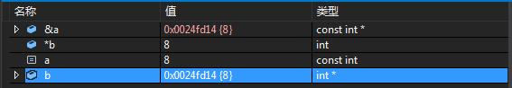

const关键字
撰写于 2018-05-30 修改于 2018-05-30 分类 C/C++
前言
如果你说你是搞C++的，那么const肯定是经常的看到的，如果你一脸懵逼，那就GUN回去，再看一遍C++Primer，或者看我这篇文章。话不多说，转入正题
什么是const
const 就是constant的缩写，意思是： 不变的，永恒的，持续的。 也就是被const修饰的变量不会发生改变，被const修饰的成员函数中，不能修改成员函数的值。一般别用来修饰内置类型变量、对象、成员反函数、返回值、函数参数。
修饰普通内置类型变量
1 | const int a = 7; |
a被定义为常量，可以把a赋值给非常量的b，但是a不是再次赋值，编译报错：表达式必须是可修改的左值。
但是如果你非要想改变怎么办？有人说可以用指针啊！对！可以用指针改变a的值。
1 | int main(void) |
运行以上代码，发现输出依旧是7，并没有发生变化啊，其实不然，其实a在内存中值已经发生了变化，但是编译器搞了点事情，如果你断点调试的话，就会发现，其实a的值已经改变了，如下图：

但是a却不知道自己发生了变化，这是为什么呢？这就牵涉到程序运行过程中，内存的处理。如果想让程序正常运行，可以加一个volatile修饰:volatile const int a = 7;。 这里就不细说了，在volatile这篇中，会详细介绍。总之如果一个变量声明为const，就不要尝试修改它的值，否则会发生意想不到的结果。
修饰指针变量
- const修饰指针指向的内容（ const char * p，char const * p）,则内容不可以变。
- const修饰指针(char * const p)，则指针不能发生变化。
- const修饰指针和指针指向的内容(const char * const p)，则内容和指正都不能发生变化。
怎么记住这个东西呢：左定值，右定向，const修饰不变量
也就是，const在 * 左边修饰的是值，在 * 右边修饰的的是指向(指针)，是不是很简单（当然，是别人总结的）
修饰参数和返回值
修饰值类型传递
值类型传递，就不用说了，会复制一份到形参，不用const修饰，没啥意义！不再赘述。
修饰指针类型传递
修饰指针类型，在上面已经说过了。但是必须要明确一点：当传指针时，会把指针copy到形参，也就是说实参和形参的是两个不相干的指针，只不过指向的内容是相同的，如果只对指针进行操作，而不是对指针指向的内容操作，毫无意义，除非是在面试中！。也就是const修饰指针，没任何意义！（个人理解）
修饰自定义类型传递
自定义类型，比如结构体，类，联合。一般情况我们都会传入该类型的指针或者引用，如果是直接把值传过来，就会对临时对象进行构造，需要调用构造函数，浪费时间和空间。
修饰返回值
少见！
修饰成员函数
修饰成员函数，目的是防止成员函数修改被调用对象的值，即在const修饰的成员函数里面不用修改成员变量的值。C++是怎么限制修改的呢？
普通的成员函数一般都隐含了一个 this 指针，this 指针指向调用该函数的对象本身。通常情况下，this是缺省的。如函数a.fn(p1)实际上是fn(&a, p1)。const修饰的成员函数，传入的对象指针this是加了const修饰的，也就是指向的对象不能发生改变。这也是为什么static和const不能同时修饰成员函数的原因：静态成员函数由于不是与任何的对象相联系，因此它不具有this指针。从这个意义上讲，它无法访问属于类对象的非静态数据成员，也无法访问非静态成员函数，它只能调用其他的静态成员函数。1
2
3
4
5
6
7
8
9
10
11
12
13
14
15
16
17
18
19
20
21
22
23
24
25
26
27
28
29
30
31
32
33
34
35/* bs.h */
using namespace std;
class Rectangle
{
private:
int m_w, m_h, m_len;
static int s_snum;
public:
Rectangle(int w, int h);
static void GetSum() ;
void GetLen() const;
};
/*bs.cpp*/
int Rectangle::s_snum = 0;
Rectangle::Rectangle(int w, int h)
{
m_h = h;
m_w = w;
s_snum += (m_h * m_w);
}
void Rectangle::GetSum()
{
m_w = m_w + 1;
}
void Rectangle::GetLen() const
{
s_snum = (m_h + m_w) * 2;
}
上面的类定义了 void GetLen() const;，无法在该函数里面修改成员变量，编译就会报错：表达式必须是可修改的左值。
但是！如果想在const修饰的成员函数中修改某一个成员变量，怎么办呢？在需要修改的成员变量前加 mutable 关键字即可！
总结：
- const的作用就是： 保护
- 能用const地方，就用